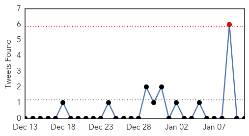
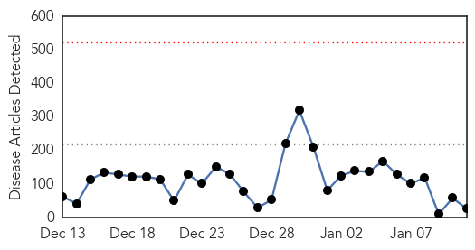

Unknown
30-Day Web Trend
0 alerts, 0 warnings

30-Day Twitter Trend
1 alerts, 0 warnings

Article Locations


Article Confidences

Top Articles:
- 0.972
- 212 Cambodians contract HIV from contaminated medical equipment
- 0.969
- Flu hits hard at care facilities for the elderly
- 0.969
- 212 infected with HIV due to contaminated equipment in Cambodia
- 0.959
- 212 Cambodians Infected With H.I.V. Due To Contaminated Medical Equipment
- 0.956
- Keeping your family safe during flu season
- 0.933
- Farsnews
- 0.929
- Cambodia finds 212 with HIV where unlicensed medic operated
- 0.917
- Chicago Tribune
- 0.917
- Chicago Tribune
- 0.917
- Chicago Tribune
- 0.917
- Chicago Tribune
- 0.917
- Chicago Tribune
- 0.917
- Chicago Tribune
- 0.917
- Chicago Tribune
- 0.917
- Chicago Tribune
- 0.868
- Cambodia finds 212 with HIV
- 0.866
- S.Korea President Park says no pre-condition to summit with North's Kim
- 0.857
- Tainted needles blamed, National, Phnom Penh Post
- 0.852
- LATEST: CDC continues to investigate listeria linked to caramel apples; at least six people have died
- 0.829
- Number of STDs reported increased 41 per cent in Abu Dhabi in 2014
- 0.816
- Ministry Monitors Spill Effect
- 0.803
- Seven Confirmed Leptospirosis Cases In Pahang
- 0.783
- New Recommendation for Pneumonia Vaccine
- 0.755
- KRNV, Reno, NV
- 0.755
- KRNV, Reno, NV
- 0.755
- KRNV, Reno, NV
- 0.698
- Over 150,000 diarrhoea cases reported in Sindh last year - Pakistan
- 0.689
- 212 Cambodian villagers infected with HIV
- 0.675
- Villagers resort to human antibiotics to cure chickens
- 0.603
- Voodoo priests, doctors on Haiti’s mental healthcare frontline
- 0.557
- County urges HPV vaccines for kids to prevent cancer
- 0.555
- Palya primary health centre records 520 deliveries in 2014
- 0.549
- Haiti urged to resolve political crisis on quake anniversary
- 0.549
- Croatia elects first female president
- 0.549
- Dozens killed in Pakistani bus crash
- 0.549
- ‘La Dolce Vita’ actress Anita Ekberg dies at 83
- 0.549
- As it happened: Paris unity march
- 0.549
- Arson attack on German paper that printed Charlie Hebdo cartoons
- 0.549
- Millions across France join 'unprecedented' rallies against terrorism
- 0.548
- Kuwait- Health Min. adopts anti-cancer strategy
- 0.515
- Romford hospital a global leader in fighting bowel disease
- 0.500
- Hospital chiefs turned ambulances away from busy A&E units 58 TIMES over Christmas
Top Tweets:
-
No tweets found for Jan 11, 2015
Ebola
30-Day Web Trend
0 alerts, 0 warnings

30-Day Twitter Trend
0 alerts, 0 warnings

Article Locations


Article Confidences

Top Articles:
- 0.999
- Gaining Trust Of Ebola Victims Just As Important As Funding
- 0.998
- Sierra Leone better positioned now to fight Ebola
- 0.997
- First Ebola clinic for pregnant women in Sierra Leone
- 0.996
- Liberian Ambulance Team Joins Sierra Leone For Ebola Fight
- 0.995
- Pivotal Ebola vaccine trials to start this month or next: WHO
- 0.994
- World Health Organisation chief Margaret Chan reluctant to dole out tough medicine
- 0.993
- Two leading Ebola vaccines appear safe, further tests starting
- 0.993
- Sudan Vision Daily
- 0.992
- Wendy Orent: Why predictions of lethal pandemics should be ignored
- 0.992
- Over 2,000 receive training in Ebola management
- 0.991
- No Ebola cases registered in Saudi Arabia
- 0.982
- Ellen commends First Responders for commitment to eradicate Ebola in Sub-region
- 0.980
- Some of Grasso's own constituents likely 'freeloaders'
- 0.980
- Hospital imposes quarantine to contain flu
- 0.951
- Playing catch helps prevent falls in the older adults
- 0.951
- 'Al Qaeda plotting 'mass casualty' attack in West'
- 0.917
- President Koroma Calls for Effective Coordination To Finally Eradicate Ebola
- 0.905
- Sierra Leonean in Australia Rescues Ebola Victims
- 0.872
- Chinese Ambassador Zhao Yanbo Hands Over China's New Gratuitous Support to Sierra Leone - Sierra Leone
- 0.835
- Ebola virus continues to fuel Sierra Leone's economic freefall
- 0.814
- Kenya : Workers heed call of duty in Ebola hit nations
- 0.809
- “Turning a Big Ship is not Just Like turning around a Canoe”
- 0.770
- Fort Carson soldiers in quarantine
- 0.746
- Mission to Liberia has been a 'huge success story,' Fort Bliss officer says
- 0.744
- Akron bridal store at center of Ebola scare closing - Tallmadge Express
- 0.678
- With trip to Liberia comes caution on return
- 0.538
- Nigeria Commits Additional 1.5 Million To Aid Ebola Fight In Liberia
Top Tweets:
- 0.912
- Ebola Update: 20972 confirmed probable and suspected cases reported in 3 most affected countries with 8259 deaths. EbolaResponse
- 0.890
- AWESOME!! Together we can stop Ebola. TackleEbola
- 0.533
- Once the Ebola outbreak is over here's one for the bucket list: surfing Sierra Leone http://t.co/ry5sy8VTTr